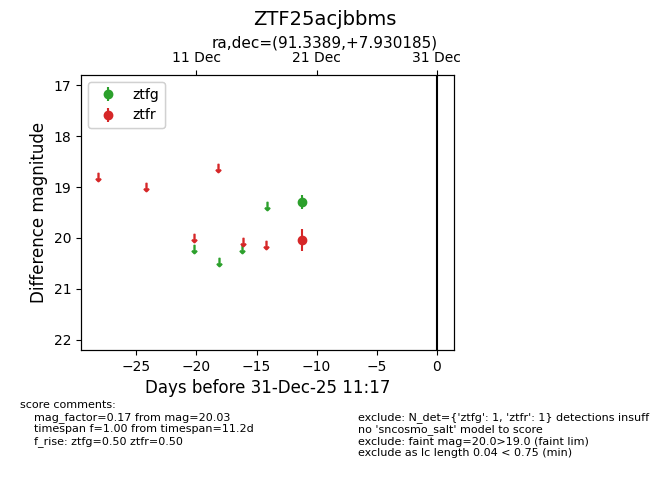
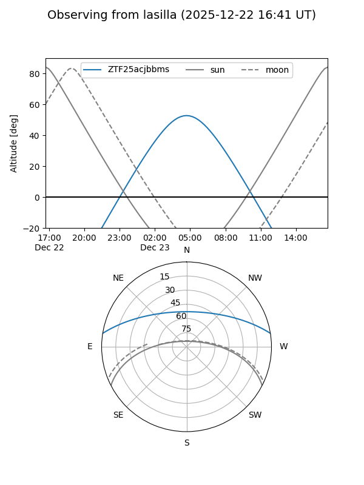
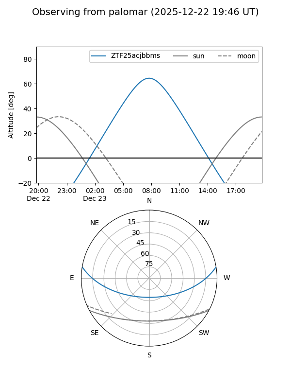

ZTF25acjbbms
Target ZTF25acjbbms at 2025-12-31 17:00
Aliases and brokers:
FINK:
Lasair:
ALeRCE:
alt names
ZTF25acjbbms (ztf,fink_ztf)
Coordinates:
equatorial (ra, dec) = 91.3389,+7.93018
equatorial (HMS+DMS) = 06:05:21.34,+07:55:48.67
galactic (l, b) = (200.5538,-6.49622)
Flags:
Photometry:
last ztfg=19.29, ztfr=20.03
1 ztfg, 1 ztfr detections
Lightcurve

Visibility


Additional plots